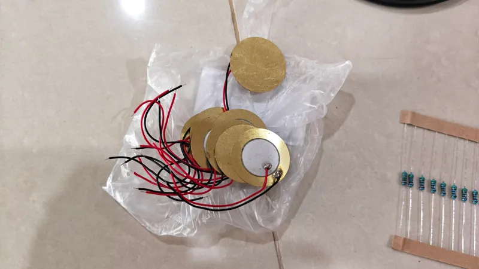
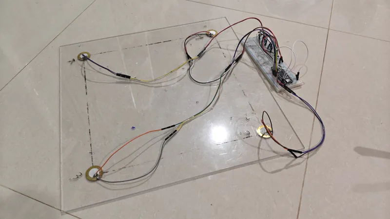
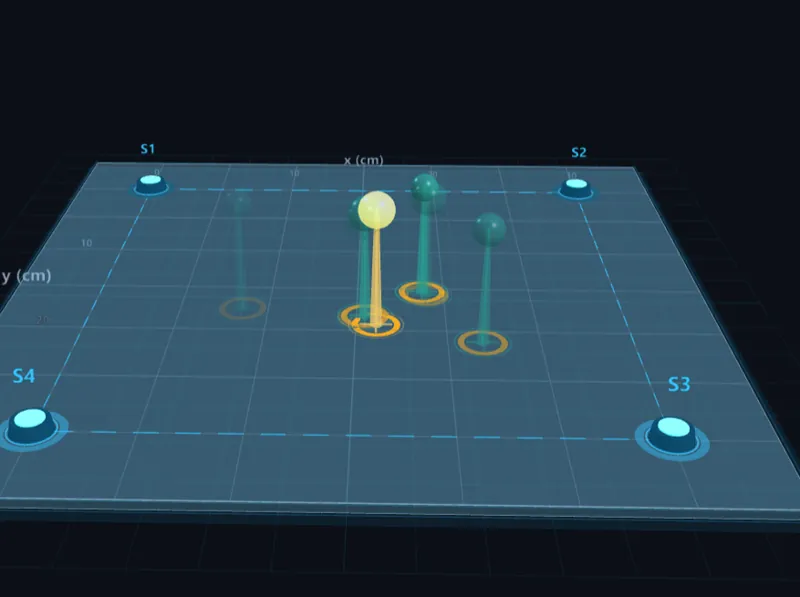
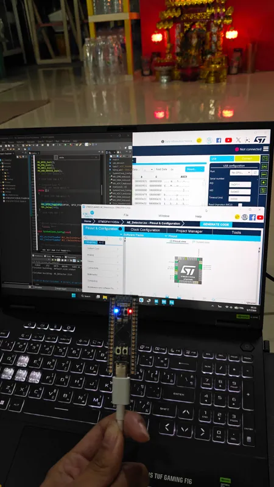
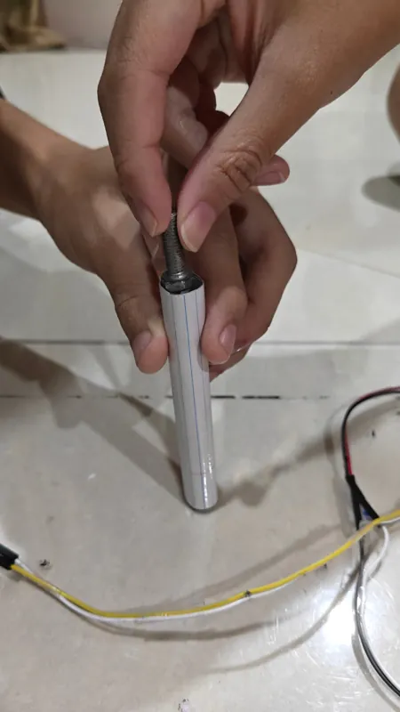
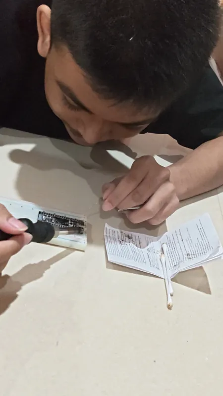
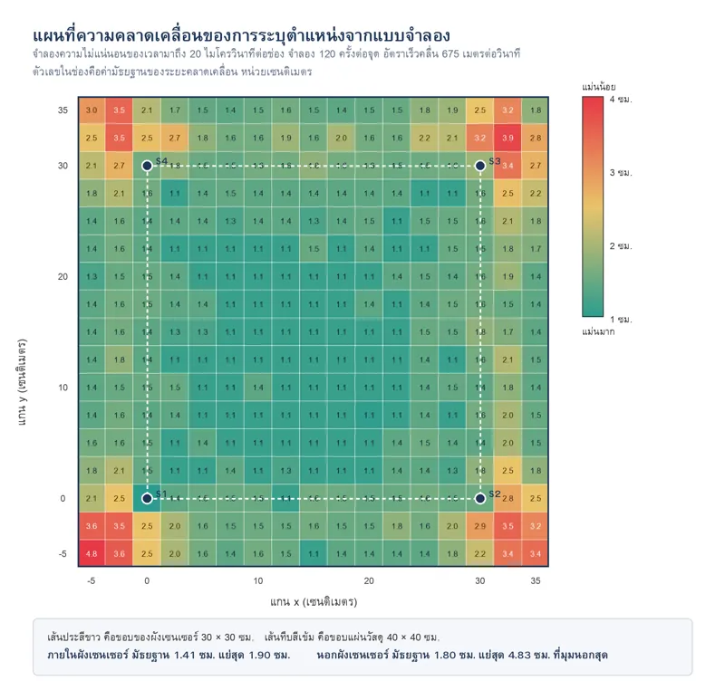

ความละเอียด
Han และคณะ (2025) รายงานความถูกต้องร้อยละ 99.625 แต่เป็นการจำแนกว่าอยู่ช่องใดจาก 16 ช่อง ช่องละ 100 มม.
ส่วนเราให้พิกัดต่อเนื่องคลาด 13.3 มม. เทียบกันโดยตรงไม่ได้เพราะคนละมาตรวัด
Science Project · ฟิสิกส์ · โรงเรียนมัธยมวัดด่านสำโรง · ปีการศึกษา 2569
เราไม่ยิงคลื่นเข้าไปในวัสดุ แต่แค่ “ฟัง” คลื่นที่วัสดุปล่อยออกมาเองตอนที่มันร้าว
Background and Significance
อาคาร สะพาน และท่อส่งของเหลวเสื่อมสภาพตลอดเวลา แต่ไม่พังทันที มันเริ่มจากรอยร้าวเล็กระดับไมโครเมตรที่มองไม่เห็นด้วยตาเปล่า แล้วค่อย ๆ ขยายจนโครงสร้างวิบัติ ปัญหาคือวิธีตรวจที่ใช้กันอยู่ยังมีข้อจำกัด
จะเห็นตอนรอยร้าวโตพอมองเห็นแล้ว ซึ่งสายเกินกว่าจะป้องกัน
ละเอียดกว่า แต่ต้องหยุดใช้งานโครงสร้าง ต้องมีผู้เชี่ยวชาญ และตรวจได้ทีละจุด
เป็นวิธีเชิงรับ เราไม่ยิงคลื่นเข้าไปในวัสดุ แต่แค่ “ฟัง” คลื่นที่วัสดุปล่อยออกมาเองตอนที่มันร้าว จึงเฝ้าฟังได้ตลอดเวลาขณะโครงสร้างยังใช้งานอยู่ และจับเฉพาะรอยร้าวที่กำลังลุกลาม ซึ่งเป็นรอยที่มีความเสี่ยงจริง
แต่ระบบ AE ในตลาดราคาหลักแสนถึงหลักล้านบาท โรงเรียนและหน่วยงานท้องถิ่นเข้าไม่ถึง
คำถามของเรา
หลักการเดียวกันนี้ สร้างเองด้วยของต่ำกว่า 2,000 บาทได้หรือไม่ และจะบอกตำแหน่งได้แม่นแค่ไหน

Objectives
เราต้องการเครื่องที่ตรวจจับได้ บอกตำแหน่งได้ บอกความรุนแรงได้ และแสดงผลทันที จึงตั้งวัตถุประสงค์ไว้ 4 ข้อ
สร้างต้นแบบตรวจจับคลื่นจากรอยร้าว ด้วยเซนเซอร์เพียโซ 4 ตัว ต่อกับ STM32F411CEU6
หาตำแหน่งสองมิติด้วย TDOA โดยใช้เซนเซอร์ 4 ตัว ไม่ใช่ 3 ตัวที่พอดีกับสมการ จึงได้สมการเกินมาหนึ่งข้อไว้ตรวจว่าคำตอบน่าเชื่อถือแค่ไหน พูดง่าย ๆ คือระบบตรวจตัวเองได้
จำแนกพลังงานเป็น 3 ระดับ คือ Minor, Warning และ Critical โดยเกณฑ์มาจากข้อมูลที่วัดได้จริง ไม่ใช่ตัวเลขที่ตั้งขึ้นลอย ๆ
แสดงผลตำแหน่งแบบสามมิติผ่านเว็บแบบเรียลไทม์ ซึ่งสามมิติเป็นวิธีแสดงผล ส่วนการระบุพิกัดเป็นสองมิติ
Hypothesis
เราตั้งไว้ว่าเครื่องที่ทำจากของราคาประหยัดจะบอกตำแหน่งและแยกระดับความรุนแรงได้จริง แยกเป็น 4 ข้อ
เลือกสมมติฐานเพื่อดูรายละเอียด
เพียโซราคาประหยัดให้สัญญาณแรงพอจะหาเวลามาถึงของคลื่นได้โดยไม่ต้องใช้วงจรขยาย ข้อนี้เสี่ยงที่สุด เพราะแนวทางทั่วไปคือต้องขยายก่อน
▲ เสี่ยงที่สุด
ผลต่างเวลาที่คลื่นถึงเซนเซอร์แต่ละคู่ ใช้คำนวณตำแหน่งได้ คลาดเคลื่อนไม่เกิน 5 เซนติเมตร ในพื้นที่ที่เซนเซอร์ล้อมรอบ
≤ 5 ซม.
แอมพลิจูดสัมพันธ์กับพลังงานที่ป้อนเข้า จึงใช้แบ่ง 3 ระดับได้ แต่เกณฑ์ต้องสอบเทียบกับเครื่องที่ประกอบแล้ว เพราะค่าขึ้นกับความไวเซนเซอร์และชนิดวัสดุ
3 ระดับ
ความคลาดเคลื่อนที่เหลือจะใกล้เคียงขีดจำกัดทางทฤษฎี ซึ่งคำนวณล่วงหน้าได้จากอัตราการสุ่มและความเร็วคลื่น ข้อนี้ทำให้เรารู้ตั้งแต่ต้นว่าเครื่องนี้แม่นที่สุดได้แค่ไหน
ความคลาดเคลื่อนที่เหลือขีดจำกัดทางทฤษฎี
How it works
ภาพที่ 1
คลื่นความดันที่วัสดุปล่อยออกมาเองขณะร้าว ไม่ใช่คลื่นที่เรายิงเข้าไป
ภาพที่ 2
ผลต่างเวลาที่คลื่นถึงเซนเซอร์สองตัว มันแปรตรงกับผลต่างระยะทาง ซึ่งบังคับว่าแหล่งกำเนิดต้องอยู่บนเส้นไฮเพอร์โบลาเส้นหนึ่ง
ภาพที่ 3
เราไม่วัดที่ยอดคลื่น เพราะยอดคลื่นมาช้าและขึ้นกับความแรงสัญญาณ เราวัดที่จุดแรกที่สัญญาณเบนออกจากเส้นฐาน ใช้เกณฑ์ร้อยละ 3 ของยอดคลื่นของช่องนั้นเอง คิดเป็นสัดส่วน ช่องแรงกับช่องเบาจึงถูกวัดที่จุดเดียวกันบนรูปคลื่น
ภาพที่ 4
3 สมการ ต่อ 2 ตัวแปร แก้ด้วยวิธีกำลังสองน้อยสุด
ภาพที่ 5
ตัดเซนเซอร์ออกทีละตัวแล้วคำนวณใหม่ 4 รอบ ถ้าคำตอบเกาะกลุ่มกันแปลว่าเชื่อถือได้ ข้อดีคือใช้ได้ตอนสาธิตสดที่เราไม่รู้คำตอบล่วงหน้า
ภาพที่ 6
น็อตหย่อนผ่านท่อ พลังงานเท่ากับ mgh จึงคงที่ทุกครั้ง ใช้แทนวิธีหักไส้ดินสอตาม ASTM E976 ที่เราลองแล้วกระตุ้นระบบไม่ได้ทั้งบนไม้ MDF และอะคริลิก
Interactive · TDOA
จำลองเพื่ออธิบายหลักการ — ไม่ใช่ข้อมูลจากเครื่องจริง
คลิกหรือแตะบนแผ่น · ใช้ปุ่มลูกศรเลื่อนเป้า (Shift = 5 ซม.) แล้วกด Enter
Δt = Δd ÷ v · v = 675 m/s
แผ่น 30 × 30 ซม. เซนเซอร์ S1 (0,0) · S2 (30,0) · S3 (30,30) · S4 (0,30) ภาพเคลื่อนไหวช้าลงราว 4,000 เท่า เพื่อให้มองเห็นคลื่น
| เซนเซอร์ | ลำดับ | ระยะ (ซม.) | Δt (µs) |
|---|---|---|---|
| S1 (0,0) | – | – | – |
| S2 (30,0) | – | – | – |
| S3 (30,30) | – | – | – |
| S4 (0,30) | – | – | – |
ตำแหน่งที่คำนวณจาก Δt
ยังไม่ได้วางจุด
เลือกจุดบนแผ่นเพื่อเริ่มจำลอง

System design
เซนเซอร์ทั้ง 4 ตัวติดที่มุมของกรอบสี่เหลี่ยมจัตุรัส 30 × 30 ซม. บนแผ่นอะคริลิก 40 × 40 ซม. โดยมุมล่างซ้ายเป็นจุดกำเนิดพิกัด เลือกรูปจัตุรัสเพราะให้ความสมมาตรทั้งสองแกน ความแม่นยำจึงกระจายสม่ำเสมอทั่วพื้นที่ และแผ่นต้องยกลอยด้วยโฟมรองสี่มุม เพราะถ้าวางแนบโต๊ะ พลังงานคลื่นจะรั่วลงโต๊ะจนเซนเซอร์ตัวไกลไม่ได้ยิน

เซนเซอร์ทั้ง 4 ตัวติดที่มุมของกรอบสี่เหลี่ยมจัตุรัส 30 × 30 ซม. บนแผ่นอะคริลิก 40 × 40 ซม.
สุ่ม 4 ช่องวนรอบ 26.0 ไมโครวินาทีต่อรอบ ได้ 38,462 ตัวอย่างต่อวินาทีต่อช่อง เก็บลงบัฟเฟอร์วงกลมด้วย DMA เมื่อเกินเกณฑ์จะบันทึกย้อนหลัง 512 รอบและต่อไปอีก 1,536 รอบ รวม 2,048 รอบต่อเหตุการณ์
หาจุดเริ่มคลื่นด้วยเกณฑ์ 3% ของยอดคลื่นของช่องนั้นเอง คำนวณตำแหน่งด้วยการค้นหาบนตารางสองชั้น ตรวจความน่าเชื่อถือแบบตัดออกทีละตัว และจำแนกระดับพลังงาน
ใช้ Three.js โดยแยกความหมายของสีชัดเจน สีแท่งคือระดับพลังงาน สีวงแหวนคือความน่าเชื่อถือ
สัญญาณ 4 ช่อง และจุดเริ่มคลื่น
ภาพจำลอง ไม่ใช่รูปคลื่นจริงจากเครื่อง
เราแบ่งงานเป็น 15 ขั้นตอน โดยออกแบบให้แต่ละขั้นต้องทดสอบผ่านก่อนจึงขึ้นขั้นถัดไป เพื่อว่าถ้าเกิดปัญหาจะรู้ทันทีว่ามาจากส่วนไหน ไม่ต้องไล่หาจากทั้งระบบพร้อมกัน
ทดสอบ 3 ตำแหน่ง คือจุดกึ่งกลางกรอบและจุดเยื้องตามแนวทแยงทั้งสองด้าน หย่อนน็อตจุดละ 10 ครั้ง บันทึกพิกัดที่ระบบรายงาน ผลต่างเวลา แอมพลิจูด และผลการตรวจแบบตัดออกทีละตัว
ใช้ FFT กับรูปคลื่นจริงทั้งหมด แล้วตรวจยืนยันด้วยสองวิธีที่เป็นอิสระจาก FFT คือนับจุดตัดศูนย์ในโดเมนเวลา และตรวจด้วยสายตาจากรูปคลื่น
ทดสอบด้วยสัญญาณจำลองที่รู้ค่าแน่นอน ครอบคลุมทั้งสามระดับและค่าที่ต่ำกว่าเกณฑ์ ก่อนนำข้อมูลจริงมาจำแนก



Results
ระบบที่สร้างขึ้นทำงานได้ครบวงจร ตั้งแต่ตรวจจับเหตุการณ์จนแสดงผลบนหน้าจอ
ได้อัตราเร็วคลื่นในแผ่นอะคริลิก 675 เมตรต่อวินาที ค่านี้ต่ำกว่าอัตราเร็วคลื่นตามยาวในเนื้ออะคริลิกซึ่งอยู่ระดับหลักพันเมตรต่อวินาทีมาก เพราะสิ่งที่ระบบตรวจจับได้ไม่ใช่คลื่นตามยาว แต่เป็นคลื่นดัดโค้งที่เดินทางในแผ่นบาง
ที่สำคัญกว่าตัวเลขคือ ค่าที่เคยได้และภายหลังพบว่าผิด ในการสอบเทียบช่วงแรกเราได้ 826, 996 และ 1,041 เมตรต่อวินาที ทั้งสามค่าเกิดจากการใช้สูตรที่นำระยะห่างระหว่างเซนเซอร์มาหารด้วยผลต่างเวลา แทนที่จะใช้ผลต่างของระยะทางจากจุดกำเนิดจริงถึงเซนเซอร์ทั้งสองตัว เมื่อแก้สูตรให้ถูกต้อง ค่าเปลี่ยนเป็น 675 และความแม่นยำของการระบุตำแหน่งดีขึ้นอย่างชัดเจน
หย่อนน็อตจุดละ 10 ครั้ง แล้วคัดเหตุการณ์ที่ไม่ผ่านเกณฑ์การตรวจสอบตัวเองออก
| ตำแหน่งจริง (ซม.) | ผ่านเกณฑ์ | ศูนย์กลางที่วัดได้ | คลาดเคลื่อนเฉลี่ย | สูงสุด | การกระจาย | ความเอนเอียง |
|---|---|---|---|---|---|---|
| (15.0, 15.0) | 10 | (14.25, 14.06) | 1.30 ซม. | 2.36 ซม. | 0.71 ซม. | 1.20 ซม. |
| (7.5, 7.5) | 3 | (6.83, 9.53) | 2.28 ซม. | 3.00 ซม. | 0.96 ซม. | 2.14 ซม. |
| (22.5, 22.5) | 6 | (22.00, 22.13) | 0.94 ซม. | 1.84 ซม. | 0.95 ซม. | 0.62 ซม. |
ไฮไลต์ของโครงงาน
ผลที่น่าสนใจที่สุดของโครงงานนี้ คือสัดส่วนของเหตุการณ์ที่ระบบตัดทิ้งเอง สอดคล้องกับความคลาดเคลื่อนจริงของแต่ละตำแหน่ง
แม่นที่สุด ระบบไม่ตัดข้อมูลทิ้งเลย
ตัดทิ้ง 4 จาก 10
คลาดเคลื่อนจริงมากที่สุด ระบบตัดทิ้งถึง 7 จาก 10
โดยที่ระบบไม่เคยทราบตำแหน่งจริงมาก่อน การตัดสินใจทั้งหมดอาศัยเพียงความสอดคล้องกันของข้อมูลจากเซนเซอร์ทั้งสี่ตัว นี่คือหลักฐานว่ากลไกตรวจสอบตัวเองใช้ได้จริงในสถานการณ์ที่ไม่รู้คำตอบล่วงหน้า ซึ่งก็คือสถานการณ์ใช้งานจริงทุกกรณี
ก่อนหน้านี้เราลองใช้ค่าเศษเหลือจากการแก้สมการตามที่นิยมกัน แต่พบว่าใช้ไม่ได้ มีกรณีที่ความคลาดเคลื่อนจริงเป็นศูนย์แต่เศษเหลือสูงถึง 43.6 และกรณีที่คลาดเคลื่อนจริง 95.6 เซนติเมตรแต่เศษเหลือเพียง 5.4
แบบจำลองจากหลักการเจือจางความแม่นยำเชิงเรขาคณิตทำนายว่าภายในกรอบเซนเซอร์ควรคลาดเคลื่อนราว 1.41 เซนติเมตร ค่าจริงคือ 1.33 ใกล้เคียงกันมาก แปลว่าระบบทำงานใกล้ขีดจำกัดของวิธีการแล้ว การจะแม่นกว่านี้ต้องลดความไม่แน่นอนของการวัดเวลา ไม่ใช่ปรับปรุงอัลกอริทึม
แผนที่จากการจำลอง: ในกรอบมัธยฐาน 1.41 ซม. · นอกกรอบมัธยฐาน 1.80 ซม. · แย่สุด 4.83 ซม.

จากการวิเคราะห์รูปคลื่นจริง 111 ไฟล์ ได้ค่ามัธยฐานของความถี่หลัก 1,712 เฮิรตซ์ และค่าเฉลี่ย 1,931 เฮิรตซ์ ตรวจยืนยันด้วยสามวิธีที่เป็นอิสระจากกัน คือ FFT, การนับจุดตัดศูนย์ในโดเมนเวลา และการวาดรูปคลื่นตรวจด้วยสายตา
ค่านี้ต่ำกว่าย่าน 20 ถึง 90 กิโลเฮิรตซ์ของคลื่น AE จากรอยร้าวจริงอย่างมาก แต่เป็นข้อจำกัดที่รู้ตั้งแต่ต้น เพราะอัตราการสุ่มให้เพดานไนควิสต์ที่ 19,231 เฮิรตซ์อยู่แล้ว สิ่งที่ระบบจับได้จริงคือการตอบสนองแบบคลื่นดัดโค้งของแผ่นวัสดุ ซึ่งยังคงใช้ระบุตำแหน่งได้
ใช้เกณฑ์จริงของโครงงาน 172 และ 594 ระดับ บนสเกลลอการิทึม · ตัวเลื่อนนี้เป็นตัวช่วยอธิบาย ไม่ได้อ่านค่าจากเครื่อง
| ระดับ | ช่วงแอมพลิจูด (ระดับ) | ช่วงเดซิเบลทางเสียง | สี |
|---|---|---|---|
| ระดับ 1 เล็กน้อย (Minor) | 50 – 172 | 92.1 – 102.9 | เขียว |
| ระดับ 2 ปานกลาง (Warning) | 172 – 594 | 102.9 – 113.6 | เหลือง |
| ระดับ 3 รุนแรง (Critical) | 594 – 2,047 | 113.6 – 124.3 | แดง |
ทดสอบกับสัญญาณจำลองถูกต้อง 7 จาก 7 กรณี
The decision not to compensate
“การปรับค่าให้ผลลัพธ์ดูดีขึ้นโดยไม่เข้าใจสาเหตุ ไม่ใช่การแก้ปัญหา แต่เป็นการซ่อนปัญหา”
ที่จุดกึ่งกลาง การกระจายของคำตอบอยู่ที่ 0.71 เซนติเมตร แต่ความคลาดเคลื่อนเฉลี่ยจากตำแหน่งจริงคือ 1.30 เซนติเมตร ความต่างนี้บอกว่ามีองค์ประกอบเชิงระบบขนาด 1.20 เซนติเมตรซ่อนอยู่ ซึ่งวัดซ้ำกี่ครั้งก็ไม่หาย
วัดความเบี่ยงเบนของเวลามาถึงจาก 18 เหตุการณ์ พบว่า ch0 เบี่ยง −17.5 ไมโครวินาที และ ch2 เบี่ยง +19.8 ไมโครวินาที ซึ่งเป็นเซนเซอร์คู่ทแยงมุมกันและเบี่ยงในทิศตรงข้าม
เราตั้งสมมติฐาน 5 ข้อ แล้วเขียนคำทำนายเป็นตัวเลขไว้ล่วงหน้าก่อนทดลองทุกครั้ง ตัดออกได้ 4 ข้อ เหลือข้อเดียวคือความหน่วงจากการยึดเซนเซอร์ ซึ่งทำนายไว้ว่าจะได้ (15.8, 15.9) แล้วผลจริงออกมา (15.74, 16.22) ห่างกันเพียง 0.33 เซนติเมตร ในขณะที่สมมติฐานอื่นห่าง 1.43 และ 2.62 เซนติเมตร สาเหตุคือความหนาของเทปและแรงกดที่ยึดเซนเซอร์แต่ละตัวไม่เท่ากัน
แต่พอนำค่าความหน่วงไปชดเชยจริง กลับใช้ได้เฉพาะตำแหน่งที่หาค่ามา พอย้ายไปจุด (7.5, 7.5) ความคลาดเคลื่อนกลับเพิ่มจาก 1.80 เป็น 2.65 เซนติเมตร เราจึงตัดสินใจไม่ใช้ค่าชดเชย แม้ว่ามันจะทำให้ตัวเลขที่รายงานดูดีขึ้น
Conclusion
ระบบประกอบด้วยเซนเซอร์เพียโซ 4 ตัวที่มุมกรอบ 30 × 30 ซม. บนแผ่นอะคริลิกหนา 5 มม. ต่อกับ STM32 ที่สุ่มสัญญาณ 38,462 ตัวอย่างต่อวินาทีต่อช่อง ส่งเข้าคอมพิวเตอร์คำนวณตำแหน่งด้วยผลต่างเวลามาถึง แล้วแสดงผลบนเว็บ
บรรลุ 2 จาก 3 ข้อ · บรรลุบางส่วน 1 ข้อ
บรรลุ
ทำงานครบวงจร คลาดเคลื่อนเฉลี่ย 1.33 ซม. อยู่ในเกณฑ์ ±3 ซม. ครบร้อยละ 100
บรรลุ
แสดงผลบนเว็บเบราว์เซอร์ ความหน่วงไม่เกิน 200 มิลลิวินาที
บรรลุบางส่วน
เกณฑ์คำนวณจากช่วงไดนามิกของฮาร์ดแวร์ ทดสอบกับสัญญาณจำลองถูกต้อง 7 จาก 7 แต่ยังไม่ได้ทดสอบระดับ 1 และ 3 ด้วยเหตุการณ์จริง
ความคลาดเคลื่อนแบ่งเป็นสองส่วน:
ความไม่แน่นอนแบบสุ่ม (ลดได้ด้วยการวัดซ้ำแล้วเฉลี่ย)
ความเอนเอียงเชิงระบบ (วัดซ้ำกี่ครั้งก็ไม่ลด)
Han และคณะ (2025) รายงานความถูกต้องร้อยละ 99.625 แต่เป็นการจำแนกว่าอยู่ช่องใดจาก 16 ช่อง ช่องละ 100 มม.
ส่วนเราให้พิกัดต่อเนื่องคลาด 13.3 มม. เทียบกันโดยตรงไม่ได้เพราะคนละมาตรวัด
งานที่แม่นยำล้วนใช้เซนเซอร์เฉพาะทางระดับอุตสาหกรรม
เราใช้แผ่นเพียโซชนิดทำออดไฟฟ้าและไมโครคอนโทรลเลอร์ทั่วไป การที่หลักการเดียวกันยังทำงานได้ในระดับเซนติเมตร ทำให้เทคโนโลยีนี้เข้าถึงได้ในสถานศึกษาและหน่วยงานที่งบจำกัด
วิธีเรียนรู้เชิงลึกอธิบายที่มาของคำตอบไม่ได้
แต่ TDOA ตั้งอยู่บนสมการฟิสิกส์ เมื่อผิดพลาดจึงตามหาสาเหตุเชิงกายภาพได้
แต่สิ่งที่ได้จริงที่สุดคือกระบวนการทางวิทยาศาสตร์
โครงงานนี้ฝึกการตั้งสมมติฐานที่ทดสอบได้ การแยกสาเหตุทีละข้อ การทำนายผลไว้ก่อนทดลอง และที่สำคัญที่สุดคือการยอมรับเมื่อสมมติฐานของตัวเองถูกหักล้างด้วยข้อมูล ดังกรณีที่เราตัดสินใจไม่ใช้ค่าชดเชย
Gallery
Team
โรงเรียนมัธยมวัดด่านสำโรง
สำนักงานเขตพื้นที่การศึกษามัธยมศึกษาสมุทรปราการ
โครงงานวิทยาศาสตร์ ประเภทฟิสิกส์ · ปีการศึกษา 2569